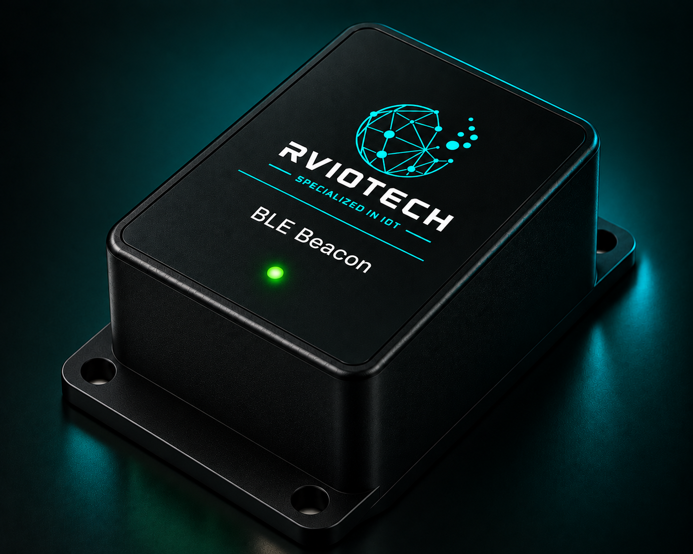

Concept image. Final product design may vary.
BLE Beacon
A compact Bluetooth Low Energy beacon designed for asset tracking, people tracking, indoor positioning and proximity-based applications. The beacon periodically transmits wireless identification signals that can be detected by BLE-enabled devices and gateways.
ENQUIRE ABOUT THIS PRODUCT →
Simple.
Wireless.
Reliable.
The BLE Beacon periodically transmits Bluetooth Low Energy signals containing an identifier. Nearby smartphones, BLE gateways or other compatible receivers can detect these signals and use them for tracking, presence detection or location-based applications.
Enable Location Awareness
Without Complex
Infrastructure
Many applications need to know the presence, movement or location of people and assets. BLE Beacons provide a simple wireless method for broadcasting an identifiable signal that can be detected by compatible receivers.
- Bluetooth Low Energy (BLE)
- Low-power wireless operation
- Configurable advertising parameters
- Unique device identification
- Compact and lightweight design
- Suitable for indoor applications
- Integration with BLE gateways and applications
- Low-power wireless operation
- Simple deployment and maintenance
- Cost-effective tracking solution
- Works with standard BLE receivers
- Flexible configuration options
- Suitable for a wide range of applications
- Enables better visibility of assets and people
Bring Wireless Tracking To Your Application
Looking to implement BLE beacons for tracking, monitoring or location-based applications? Talk to us about your requirement and we'll help you find the right solution.